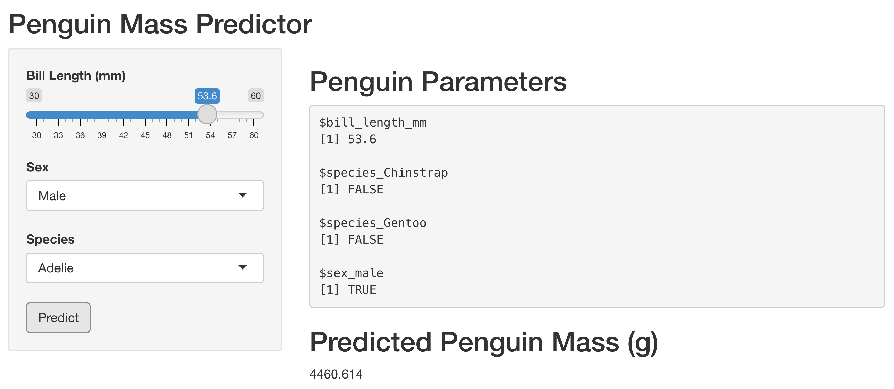

library(ggplot2)
library(dplyr)
library(palmerpenguins)
library(shiny)
all_penguins <- c("Adelie", "Chinstrap", "Gentoo")
# Define UI
ui <- fluidPage(
sidebarLayout(
sidebarPanel(
# Select which species to include
selectInput(
inputId = "species",
label = "Species",
choices = all_penguins,
selected = all_penguins,
multiple = TRUE
)
),
# Show a plot of penguin data
mainPanel(
plotOutput("penguinPlot")
)
)
)
server <- function(input, output) {
output$penguinPlot <- renderPlot({
# Filter data
dat <- palmerpenguins::penguins %>%
dplyr::filter(
species %in% input$species
)
# Render Plot
dat %>%
ggplot(
aes(
x = flipper_length_mm,
y = body_mass_g,
color = sex
)
) +
geom_point()
})
}
# Run the application
shinyApp(ui = ui, server = server)4 Designing Your Application Layers
As a data scientist, you’re probably well familiar with the concept of functions in your chosen programming language. The advantage of functions is that once you’ve written one, you can focus exclusively on what’s happening inside the function. When you’re not, you can logically abstract away what the function does and just assume that you’ll write a function to do that thing.
You should be thinking similarly about the architecture of your data science project.
As you’re building out your app, report, or API, you should be thinking about how to architect your project so that you can do updates in the future in a way that is painless. You want to modularize your app so that you can apply the other best practices in this book – like using CI/CD easily and painlessly.
One of the key concepts is of app layers. In traditional software engineering, the most common architecture is a three-layer app. In a three layer app, the front-end or presentation layer, is divided up from the back-end or the application layer and data layer.
In data science, there are rough equivalents to each of these layers as the table below shows.
| Front/Back End? ============== Front End | Layer | Software | Data Science | | Engineering | | ==============+==============+==============+ Presentation | Javascript | Shiny | | /Da | | | sh/Streamlit | | | | | | Quarto/R M | | | ark | | | down/Jupyter | | |||
| Back End | Application | API | Functions | | | or API | | |||
| Back End | Data | Database | Data | |
As we got into in Chapter 3, there are a variety of different ways to architect your data layer, you may or may not choose to actually use a database.
This chapter is all about how to make the Application layer work for you.
4.1 Separate business and interaction logic
All too often, I see monolithic Shiny apps of thousands or tens of thousands of lines of code, with button definitions, UI bits, and user interaction definitions mixed in among the actual work of the app.
There are two reasons this doesn’t work particularly well.
It’s much easier to read through your app or report code and understand what it’s doing when the app itself is only concerned with displaying UI elements to the user, passing choices and actions to the backend, and then displaying the result back to the user.
The application tier is where your business logic should live. The business logic is that actual work that the application does. For a data science app, this is often slicing and dicing data, computing statistics on that data, generating model predictions, and constructing plots.
Separating presentation from business layers means that you want to encapsulate the business logic somehow so that you can work on how the business logic works independently from changing the way users might interact with the app. For example, this might mean creating standalone functions to write plots or create statistics.
If you’re using Shiny, R Markdown, or Quarto, this will mean passing values to those functions that are no longer reactive and that have been generated from input parameters.
Let’s start with a counterexample.
Here’s a simple app in Shiny for R that visualizes certain data points from the Palmer Penguins data set. This is an example of bad app architecture.
The structure of this Shiny app is bad. Now, it’s not a huge deal, because this is a simple Shiny app that’s pretty easy to parse if you are reasonably comfortable with R and Shiny.
Why is this bad? Look at the app’s server block. Because all of the app’s logic is contained inside a single plotRender statement.
plotRender is a presentation function – it renders plots. But I’ve got logic in there that generates the data set I need and generates the plot.
Again, because this app is simple, it’s not a huge deal here. But imagine if this app had several tabs, multiple input dropdowns, a dozen or more plots, and complicated logic dictating how to process the dropdown choices into the plots. It would be a mess!
Instead, we should separate the presentation logic from the business logic. That is, let’s separate the code for generating the UI, taking the user’s choice of penguin
The business logic – what those decisions mean, and the resulting calculations – should, at minimum, be moved into standalone functions.
library(ggplot2)
library(dplyr)
library(palmerpenguins)
library(shiny)
all_penguins <- c("Adelie", "Chinstrap", "Gentoo")
# Define UI
ui <- fluidPage(
sidebarLayout(
sidebarPanel(
# Select which species to include
selectInput(
inputId = "species",
label = "Species",
choices = all_penguins,
selected = all_penguins,
multiple = TRUE
)
),
# Show a plot of penguin data
mainPanel(
plotOutput("penguinPlot")
)
)
)
server <- function(input, output) {
# Filter data
dat <- reactive(
filter_data(input$species)
)
# Render Plot
output$penguinPlot <- renderPlot(
make_penguin_plot(dat())
)
}
# Run the application
shinyApp(ui = ui, server = server)Now you can see that the app itself had gotten much simpler. The UI hasn’t changed at all, but the server block is effectively now just two lines! And since I used descriptive function names, it’s really easy to understand what happens in each of the places where my app has reactive behavior.
Either in the same file, or in another file I can source in, I can now include the two functions that include my business logic:
#' Get the penguin data
#'
#' @param species character, which penguin species
#' @return data frame
#'
#' @examples
#' filter_data("Adelie")
filter_data <- function(species = c("Adelie", "Chinstrap", "Gentoo")) {
palmerpenguins::penguins %>%
dplyr::filter(
species %in% !!species
)
}
#' Create a plot of the penguin data
#'
#' @param data data frame
#'
#' @return ggplot object
#'
#' @examples
#' filter_data("Adelie") |> plot_gen()
plot_gen <- function(data) {
data %>%
ggplot(
aes(
x = flipper_length_mm,
y = body_mass_g,
color = sex
)
) +
geom_point()
}Note that somewhere along the way, I also added function definitions and comments using ROxygen. This isn’t an accident! Writing standalone functions is a great way to force yourself to be clear about what should happen, and writing examples is the first step towards writing tests for your code.
4.1.1 Consider using an API for long-running processes
In the case of a true three-layer app, it is almost always the case that the middle tier will be an application programming interface (API). In a data science app, separating business logic into functions is often sufficient. But if you’ve got a long-running bit of business logic, it’s often helpful to separate it into an API.
You can basically think of an API as a “function as a service”. That is, an API is just one or more functions, but instead of being called within the same process that your app is running or your report is processing, it will run in a completely separate process.
For example, let’s say you’ve got an app that allows users to feed in input data and then generate a model based on that data. If you generate the model inside the app, the user will have the experience of pressing the button to generate the model and having the app seize up on them while they’re waiting. Moreover, other users of the app will find themselves affected by this behavior.
If, instead, the button in the app ships the long-running process to a separate API, it gives you the ability to think about scaling out the presentation layer separate from the business layer.
Luckily, if you’ve written functions for your app, turning them into an API is trivial.
Let’s take that first function for getting the appropriate data set and turn it into an API using the plumber library in R. The FastAPI library is a popular Python library for writing APIs.
library(plumber)
#* @apiTitle Penguin Explorer
#* @apiDescription An API for exploring palmer penguins.
#* Get data set based on parameters
#* @param species character, which penguin species
#* @get /data
function(species = c("Adelie", "Chinstrap", "Gentoo")) {
palmerpenguins::penguins %>%
dplyr::filter(
species %in% !!species
)
}You’ll notice that there are no changes to the actual code of the function. The commented lines that provide the function name and arguments are now prefixed by #* rather than #', and there are a few more arguments, including the type of query this function accepts and the path.
I’ll also need to change my function in the app somewhat to actually call the API, but it’s pretty easy using a package like httr2 in R or requests in Python.
4.2 Querying APIs
Before we get any deeper into building your own APIs, let’s understand how an API works. If you’re using R, you’ll use the httr2 package to query an API. In Python, you’ll use requests. Both of these packages have great documentation and you can look at the specifics of how to use them in those packages.
But both of those packages are just wrappers to help you write idiomatic R or Python that gets passed along to the system curl command to actually get information from an API via an http call.
In this section, we’re going to focus on what happens at that level. What is an http call curl might make and how to understand what it requests and what comes back.
4.2.1 An API query is the same as an http call
An API call asks for an endpoint to do something.
Your computer communicates with an API via a request-response model. Your computer requests a resource and the API sends it back. Your computer actually does this constantly as your navigate across the web.
What you experience as visiting a website, your computer views as a handful of http requests to a server to fetch whatever is at that URL. The site owner’s server responds with the various assets that make up the web page, which might include the HTML skeleton for the site, the CSS styling, interactive javascript elements, and more.
Once your computer receives them, your browser reassembles them into a webpage for you to interact with. And when you click on a button in the site, one or more http requests go off and the responses dictate what happens next.
So when you manually query an API via httr2 or requests, you’re just manually making the kind of requests your computer is already making constantly.
What about REST?
You may have heard the term REST API or REST-ful.
REST is a set of architectural standards for how to build an API. An API that conforms to those standards is called REST-ful or a REST API.
If you’re using standard methods for constructing an API like R’s {plumber} package or FastAPI in Python, they’re going to be REST-ful – or at least close enough for standard usage.
In this section, I’m using the term API and REST API interchangeably.
The best way to understand http traffic is to take a close look at some. Luckily, you’ve got an easy tool – your web browser!
Open a new tab in your browser and open your developer tools. How this works will depend on your browser. In Chrome, you’ll go to View > Developer > Developer Tools and then make sure the Network tab is open.
Now, navigate to a URL in your browser (say google.com).
As you do this, you’ll see the traffic pane fill up. These are the individual requests and responses going back and forth between your computer and the server.
There are a few parts of the requests and responses that are worth understanding in some depth. The first is the status code. Status codes appear only on responses and indicate what happened with your request to the server. In your browser, you’re probably seeing mostly 200 codes, which indicates a successful response. There’s a cheatsheet below of some other codes and what they mean.
If you click on an individual line in the traffic pane, you can see some additional details. One key component is the request method. The http protocol specifies a number of verbs or request methods you’re allowed to use.
When you’re just loading a page on the web, it’ll be almost entirely GET requests, which fetch something. The other three basic http methods are POST or PUT to change or update something or a DELETE to (you guessed it) delete something. There are also a number of more esoteric http methods, but I’ve never seen a need for one.
You can see the response codes right next to each request, in chrome, codes other than 200s show up in other colors to make them easy to find.
The other most useful part of the display is the waterfall chart on the far right. This shows how long each request took to come back. If you’re finding that something is slow to load, inspecting the waterfall chart can help diagnose which requests are taking a long time.
If you click into an individual request, you can see a variety of information, including the headers and the response. Very often, inspecting the headers is a great way to debug malfunctioning http requests.
Another important component of both requests and responses are the headers.
Headers specify metadata information about the request or response. These often include the type of machine that is sending the request, authentication credentials or tokens, cookies, and more. Making sure you’ve got the correct headers on requests and responses is an important thing to check if you’re running into trouble with API calls – especially with authentication.
Lastly, requests and responses often include a body.
Note
Bodies are allowed for GET and DELETE requests, but they generally are not used. Instead, the request endpoint should fully specify the resource for a DELETE, and details for GET requests are specified via query parameters, the part of the URL that shows up after the ?, like ?first_name=alex&last_name=gold.
In a request, the body is going to provide details on what you’re trying to do with your request. In a response, the body is the information that is being sent back. JSON is the most common body response types for an API you might build, but a website is likely to have other types of bodies, like images.
4.2.1.1 Special HTTP Codes
As you work more with http traffic, you’ll learn some of the common codes. Here’s a cheatshet for some of the most frequent you’ll see.
| Code | Meaning |
|---|---|
200 |
Everyone’s favorite, a successful response. |
3xx |
Your query was redirected somewhere else, usually ok. |
4xx |
Errors with the request |
400 |
Bad request. This isn’t a request the server can understand. |
401 and 403 |
Unauthorized or forbidden. Required authentication hasn’t been provided. |
404 |
Not found. There isn’t any content to access here. |
5xx |
Errors with the server once your request got there. |
500 |
Generic server-side error. Your request was received, but there was an error processing it. |
504 |
Gateway timeout. This means that a proxy or gateway between you and the server you’re trying to access timed out before it got a response from the server. |
4.2.2 What does an API in R or Python look like?
A great mental model for an API is as a “function as a service”. So if we think about our Palmer Penguins endpoint, it’s just a function for filtering the Palmer Penguins dataset that we can access over a network.
A single API may have many different functions available – each function is available at an endpoint.
An endpoint is denoted by a path. So for example, if I had an API available at my-api.com, I might have my penguins function available at the /penguins endpoint and it would be accessible by querying my-api.com/penguins.
{plumber} and FastAPI both include frameworks for auto-generating documentation and interactive testing facilities for your API using the Swagger framework. Most often, these docs are available on the root path / of your API, though they may default to another path like /__docs__.
4.3 Comprehension Questions
- What are the layers of a three-layer application architecture? What libraries could you use to implement a three-layer architecture in R or Python?
- What is the relationship between an R or Python function and an API?
- What information goes in each of the following: request method, response code, headers, body, query parameters
4.4 Lab 4: Turn your Penguins model into an API
In this lab, we’re going to create an API from our Penguin prediction model and get some predictions out.
Note
The {vetiver} package auto-generates the API. If you’re interested in getting better at writing APIs in general, I encourage you to consult the documentation for {plumber} or {fastAPI}.
Going back to our modeling code, you can get your model back from your pin with:
<<<<<<< HEAD
Vetiver can auto-generate a {fastAPI} from this model with
You can run this in your Python session with app.run(port = 8080). You can then access run your model API by navigating to http://localhost:8080 in your browser.
You can play around with the front end there, including trying the provided examples.
If you want to call the model in code, you can use any http request library. In R you should use httr2 and in Python you should use requests. Here’s what it looks like to call the API.
Or equivalently, in Python
Note
The {vetiver} package also includes the ability to auto-query a vetiver API without having to manually perform the request in R or Python. That capability is documented in the vetiver package documentation.
Now, if your job is to build machine learning models for others to consume, you’re done. For many data scientists, the idea is to share insights with people who don’t code.
So let’s build out a little interactive front end for our model in a web app. I’m going to use the Shiny package, which has both R and Python versions.
I’m going to build an app that looks like this: 
In R, the code for the app looks like this:
app.R
library(shiny)
api_url <- "http://127.0.0.1:8080/predict"
ui <- fluidPage(
titlePanel("Penguin Mass Predictor"),
# Model input values
sidebarLayout(
sidebarPanel(
sliderInput(
"bill_length",
"Bill Length (mm)",
min = 30,
max = 60,
value = 45,
step = 0.1
),
selectInput(
"sex",
"Sex",
c("Male", "Female")
),
selectInput(
"species",
"Species",
c("Adelie", "Chinstrap", "Gentoo")
),
# Get model predictions
actionButton(
"predict",
"Predict"
)
),
mainPanel(
h2("Penguin Parameters"),
verbatimTextOutput("vals"),
h2("Predicted Penguin Mass (g)"),
textOutput("pred")
)
)
)
server <- function(input, output) {
# Input params
vals <- reactive(
list(
bill_length_mm = input$bill_length,
species_Chinstrap = input$species == "Chinstrap",
species_Gentoo = input$species == "Gentoo",
sex_male = input$sex == "Male"
)
)
# Fetch prediction from API
pred <- eventReactive(
input$predict,
httr2::request(api_url) |>
httr2::req_body_json(vals()) |>
httr2::req_perform() |>
httr2::resp_body_json(),
ignoreInit = TRUE
)
# Render to UI
output$pred <- renderText(pred()$predict[[1]])
output$vals <- renderPrint(vals())
}
# Run the application
shinyApp(ui = ui, server = server)And in Python, it looks like this
app.py
from shiny import App, render, ui, reactive
import requests
import logging
api_url = 'http://127.0.0.1:8080/predict'
logging.basicConfig(
format='%(asctime)s - %(message)s',
level=logging.INFO
)
app_ui = ui.page_fluid(
ui.panel_title("Penguin Mass Predictor"),
ui.layout_sidebar(
ui.panel_sidebar(
[ui.input_slider("bill_length", "Bill Length (mm)", 30, 60, 45, step = 0.1),
ui.input_select("sex", "Sex", ["Male", "Female"]),
ui.input_select("species", "Species", ["Adelie", "Chinstrap", "Gentoo"]),
ui.input_action_button("predict", "Predict")]
),
ui.panel_main(
ui.h2("Penguin Parameters"),
ui.output_text_verbatim("vals_out"),
ui.h2("Predicted Penguin Mass (g)"),
ui.output_text("pred_out")
)
)
)
def server(input, output, session):
logging.info("App start")
@reactive.Calc
def vals():
d = {
"bill_length_mm" : input.bill_length(),
"sex_Male" : input.sex() == "Male",
"species_Gentoo" : input.species() == "Gentoo",
"species_Chinstrap" : input.species() == "Chinstrap"
}
return d
@reactive.Calc
@reactive.event(input.predict)
def pred():
logging.info("Request Made")
r = requests.post(api_url, json = vals())
logging.info("Request Returned")
if r.status_code != 200:
logging.error("HTTP error returned")
return r.json().get('predict')[0]
@output
@render.text
def vals_out():
return f"{vals()}"
@output
@render.text
def pred_out():
return f"{round(pred())}"
app = App(app_ui, server)This isn’t a Shiny book, so I’m not going to go into why all of this works. If you’re interested in getting better at Shiny, I’d recommend the excellent Mastering Shiny book.
In both apps, the most relevant section for this chapter is the part that calls the API.